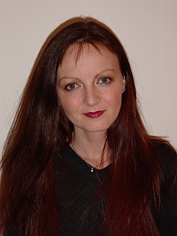
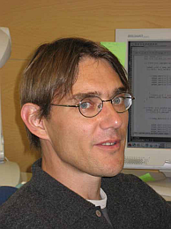

ECCB'12 KEYNOTES:
Søren Brunak
Technical University of Denmark
Aaron Ciechanover
Technion - Israel Institute of Technology
Barry Honig
Columbia University, New York
Laurent Keller
University of Lausanne
Gene Myers
MPI of Molecular Cell Biology and Genetics, Dresden
Mihaela Zavolan
Biozentrum University of Basel & SIB
CONFERENCE CHAIRS:
Torsten Schwede (chair)
Dagmar Iber (co-chair)
ECCB'12 is organized by:


Tutorial 4: Genetic Diversity
Inferring Genetic Diversity from Next-generation Sequencing Data: Computational Methods and Biomedical Applications
Niko Beerenwinkel, ETH Zurich and SIB.
Karin J. Metzner, University Hospital Zurich.
Volker Roth, University of Basel
| Date: | 9 September 2012 |
| Time: | 9:00-17:00 |
| Registration: | Congress Center Basel, Messeplatz 21 |
| Venue: | Room "Helvetia 1", Swissotel Le Plaza, Messeplatz 25 |
[Download tutorial slides here]
Genetic diversity is a hallmark of evolution and it plays a key role in the pathogenesis and treatment of rapidly evolving cancer cells and pathogens, such as viruses and bacteria. With high-coverage next-generation sequencing (NGS), the genetic diversity of mixed samples can be probed at an unprecedented level of detail in a cost-effective manner. However, reads are erroneous and relatively short, complicating the detection of low-frequency variants and the reconstruction of long haplotype sequences. In this tutorial, we will introduce new computational biology problems associated with genetic diversity estimation from NGS data. We discuss computational and statistical approaches to their solution based on probabilistic graphical models and combinatorial optimization, and we present several real-world biomedical applications, including HIV and cancer. The tutorial addresses both, potential or actual method developers as well as users of software for inferring genetic diversity from NGS data.
Motivation
Genetic diversity is abundant between species, among individuals of the same species, and also among the cells of single multicellular organisms. It plays a particularly important role in pathogen populations, where it often drives disease progression and the development of drug resistance. For example, tumors are large ensembles of genetically inhomogeneous cancer cells and the pre-existing diversity is a major factor for resistance to chemotherapy. Similarly, infectious agents, including bacteria and viruses, exist as heterogeneous populations. Prime examples are retroviruses, which include HIV, where genetic diversity is fostered by high mutation and recombination rates, resulting in so-called viral quasispecies. The diversity of viral quasispecies has been linked to disease progression, virulence, immune escape, and drug resistance.
In the past, assessing the diversity of a mixed sample has been very difficult and labor-intensive, relying either on cloning individual genomes followed by Sanger sequencing or on targeted PCR- or hybridization-based technologies. With recent NGS technologies, however, heterogeneous samples can be probed at an unprecedented level of detail in a cost-effective manner. This approach is based on direct, high-coverage sequencing of the mixed sample followed by computational and statistical analysis of the resulting read data. The data analysis and interpretation step is critical, because all NGS platforms produce reads that (i) contain errors, which limits the ability to detect low-frequency variants, and (ii) are relatively short, which complicates inference of long haplotypes and the detection of co-occurring variants.
Thus, computational and statistical methods for error correction and haplotype reconstruction are essential for inferring genetic diversity from NGS data. The development of such methods and their implementation in software tools is an emerging topic in bioinformatics. It is methodologically challenging and involves concepts from probabilistic graphical models, Markov chains, and combinatorial optimization. The tutorial aims at introducing these new computational biology problems and approaches to their solution to the bioinformatics community, including both developers and users. We will discuss experimental procedures, computational and statistical methods, and biomedical applications by means of selected case studies.
Overall Goals
The tutorial will provide an introduction to computational methods for inferring genetic diversity from NGS data. Specifically, participants will
• become acquainted with important biomedical applications of genetic diversity estimation, including the somatic evolution of cancer (intra-tumor diversity) and the evolution of viral quasispecies (intra-patient viral diversity);
• understand the different tasks associated with diversity estimation, including inference of low-frequency single nucleotide variants (SNVs) and haplotype reconstruction;
• appreciate the opportunities and limitations of different NGS technologies for diversity inference;
• survey existing approaches and software; and
• understand the basic computational and statistical principles underlying error correction and haplotype inference.
To follow the tutorial, basic statistics and algorithms are required on the level covered by any bioinformatics or systems biology Master program.
Tutorial Outline
| Time | Session Details | |
| 9:00 | Introduction: Motivation, Case Studies, NGS Technology In the first session, we start by discussing the role of genetic diversity in several biomedical systems. Two specific case studies will be analyzed in more detail, namely the genetic diversity of tumors and the intra-patient genetic diversity of HIV. They will serve as running examples throughout the tutorial. Next, we briefly review sample preparation and the basic principles of some of the most widely used NGS platforms (454/Roche and Illumina), and compare characteristic sequencing error patterns and quality scores. |
|
| 10:30 | Coffee break | |
| 11:00 | Local Diversity Estimation In this session, we first review strategies for aligning reads and filtering or correcting sequencing errors, including k-mer?based indexing methods and pairwise and multiple sequence alignment. Then, we discuss methods for inferring genetic diversity at single sites, i.e., for detecting single nucleotide variants (SNVs), followed by diversity estimation across short genomic segments, i.e., local reconstruction of haplotypes. For this purpose, probabilistic clustering methods are presented that operate either on flow grams (raw 454 data) or on DNA sequences after base calling. |
|
| 12:30 | Lunch | |
| 13:30 | Global Diversity Estimation In this session, we introduce computational methods for diversity estimation across longer genomic segments that are not covered by individual reads, i.e., for global read clustering or, equivalently, assembly into multiple global haplotypes. Specifically, we present probabilistic graphical models (finite and infinite mixture models, hidden Markov models), read graph based approaches (relying on combinatorial optimization techniques such as minimal path cover, maximum flows, graph colorings), and de novo assembly methods. |
|
| 15:00 | Coffee break | |
| 15:30 | Comparative Assessment of Methods, Demonstration of Case Studies During this session, we will compare the presented methods for diversity estimation based on general properties, such as identifiability, sample size calculations, and the trade-off between read length and depth of coverage. Existing software implementations will be surveyed in the context of successful biomedical applications. Finally, we return to the two case studies and discuss estimation of tumor diversity and intra-patient diversity of HIV using the methods for SNV detection and local and global haplotype reconstruction. |
|
| 17:00 | End of Workshop |
Tutors
|
Niko BeerenwinkelNiko Beerenwinkel is Assistant Professor for Computational Biology at the Department of Biosystems Science and Engineering of ETH Zurich in Basel. His research is at the interface of mathematics, statistics, and computer science with biology and medicine. His interests range from mathematical foundations of biostatistical models to clinical applications, including the genetic progression of cancer and the development of drug resistance in HIV. His honors include the Otto Hahn Medal of the Max Planck Society and the Emmy Noether Fellowship of the German National Science Foundation. Beerenwinkel has pioneered the development of computational methods for diversity estimation in RNA virus populations from next-generation sequencing data. He is a co-developer of several software packages for SNV detection, local and global haplotype inference. |
|
Karin J. MetznerKarin Metzner received her MD at the Goethe University in Frankfurt and is a virologist at the University Hospital Zurich, Division of Infectious Diseases and Hospital Epidemiology. She has a broad and long-standing experience in the research field of HIV drug resistance, genetics, and molecular biology. She has pioneered detection of minority variants harboring drug resistance mutations in HIV and is using next-generation sequencing to study virus evolution in HIV-infected individuals |
Volker RothVolker Roth received his diploma degree in physics from the University of Bonn in 1997 and his Ph.D. in Computer Science in 2001. From 2001 to 2003 he was a postdoctoral researcher at the Computer Vision and Pattern Recognition Group at the Institute of Computer Science in Bonn. Before joining University of Basel as Assistant Professor for Biomedical Data Analysis in 2007, he was affiliated with the Machine Learning Group at ETH Zurich, where he received the Venia Legendi (Habilitation) for the field Computational Science in 2005. Over the last years, Roth has developed machine learning methods for analyzing next-generation sequencing data. He is the main developer of the ‘PredictHaplo’ software package for global haplotype reconstruction. |